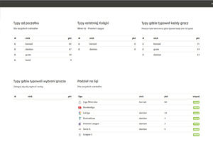

DemeRico - Typer
Strona do typowania wyników meczów piłkarskich, przygotowana dla siebie i znajomych
Kiedy: listopad / grudzień 2018
Z: Bootstrap 4 / CodeIgniter 3 / MySql
Czego się uczyłem:
- MVCnew
- FW CodeIgniternew
- Gitnew
- sporo działań na tablicach
Skupiałem się na poznaniu modelu MVC, FW CodeIgniter, routing oraz Git-a (github). Sporo czasu spędziłem na przetwarzaniu danych pobieranych z DB (najlepszy w danej lidze, wśród meczów które typował każdy itp.)
Login: adam / Hasło: adam
# about
Kiedy: listopad / grudzień 2018
Z: Bootstrap 4 / CodeIgniter 3 / MySql
Czego się uczyłem:
- MVCnew
- FW CodeIgniternew
- Gitnew
- sporo działań na tablicach
Skupiałem się na poznaniu modelu MVC, FW CodeIgniter, routing oraz Git-a (github). Sporo czasu spędziłem na przetwarzaniu danych pobieranych z DB (najlepszy w danej lidze, wśród meczów które typował każdy itp.)